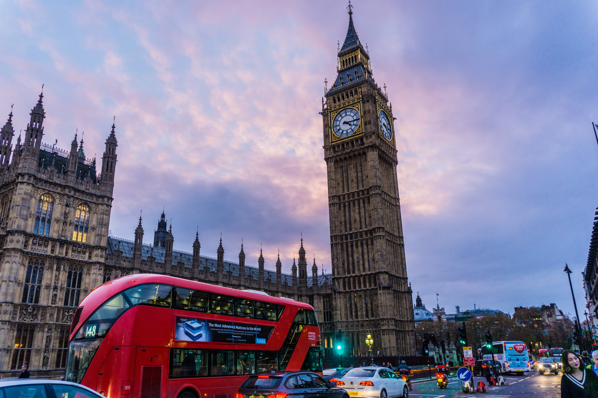
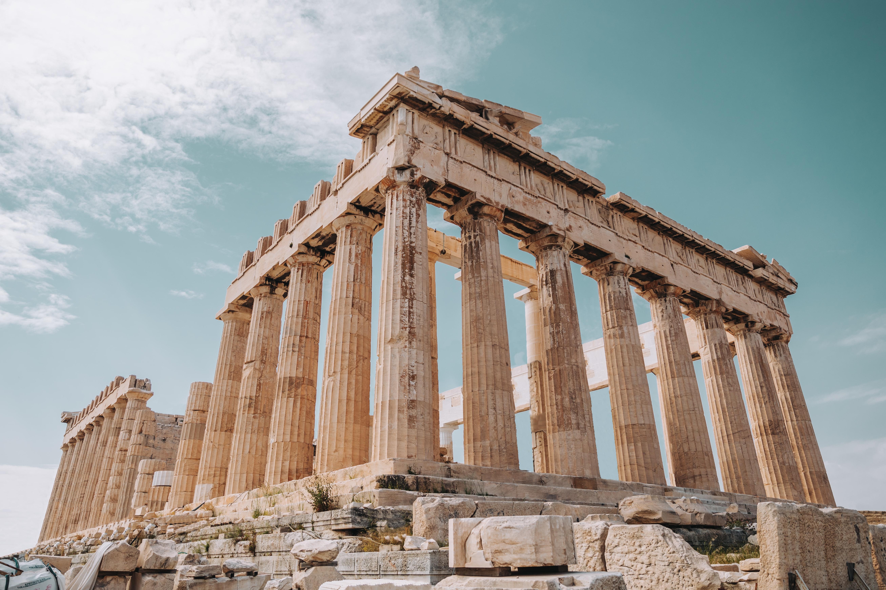

London is a vibrant city that attracts millions of tourists every year. We have prepared a list of addresses not to be missed to live an unforgettable stay alone or with your family. First of all, we advise you to go to the famous Picadilly Circus square to see it for yourself! In order to visit the most beautiful places of London in a quick way, you can take the red BigBus which also offers audio comments...
 READAthens is a dynamic city where it is possible to practice various sport and leisure activities. Indeed, we tried for you the biggest theme park of Italy! Ferris wheel, high speed train, Star Flyer, Crazy Mouse, Shock Tower... As a bonus, a play area specially designed for children under 12 years old. We also participated to the Freeday, where for the past five years, every Friday night...
 READ